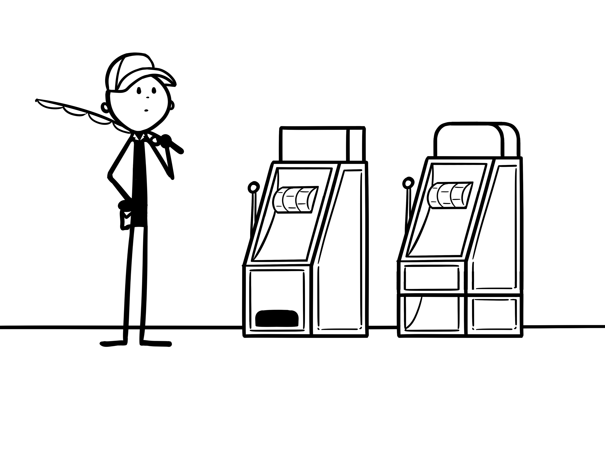
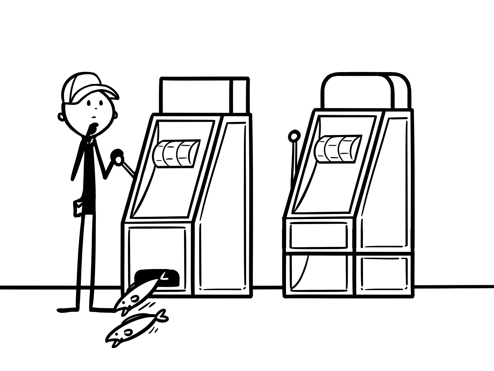
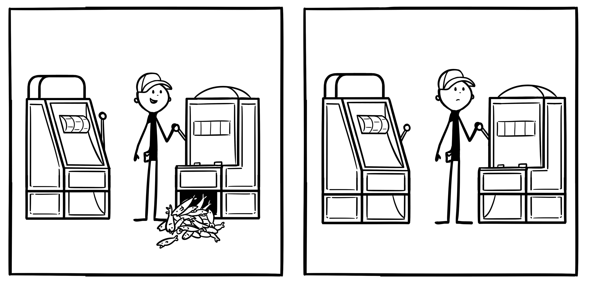
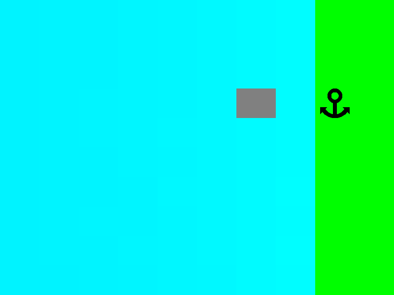
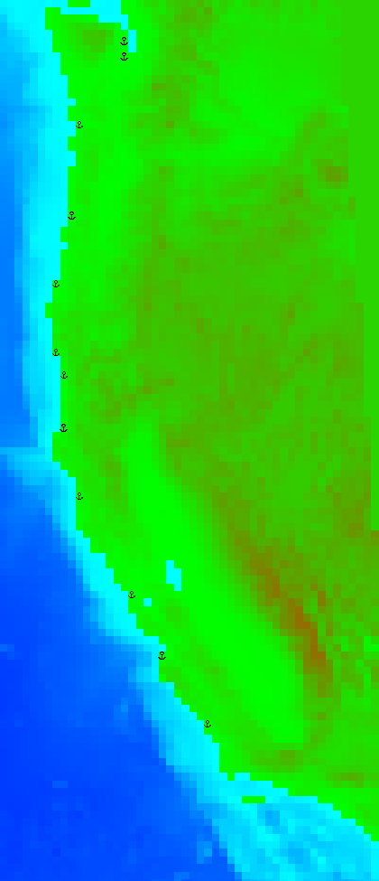
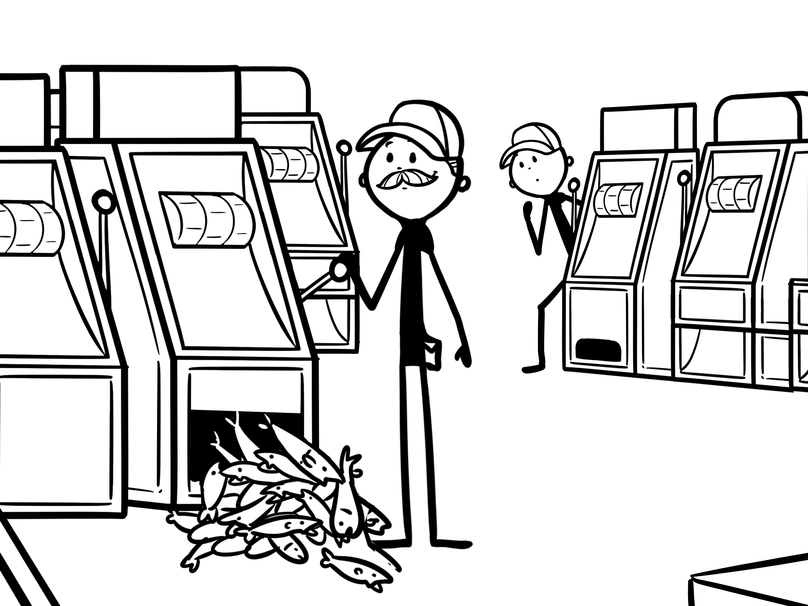
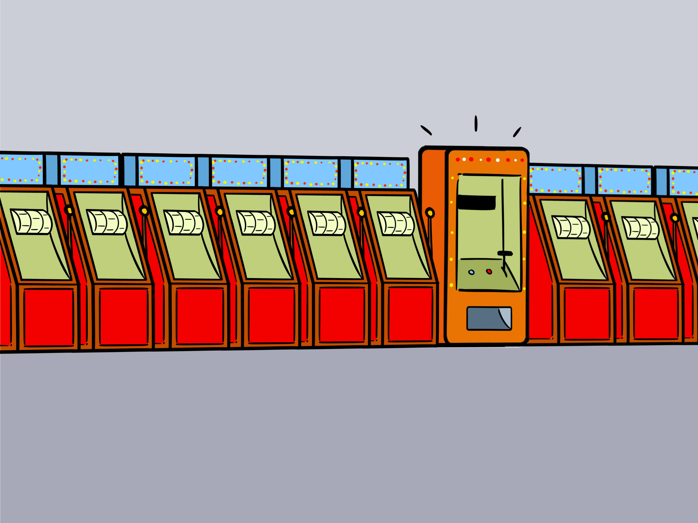
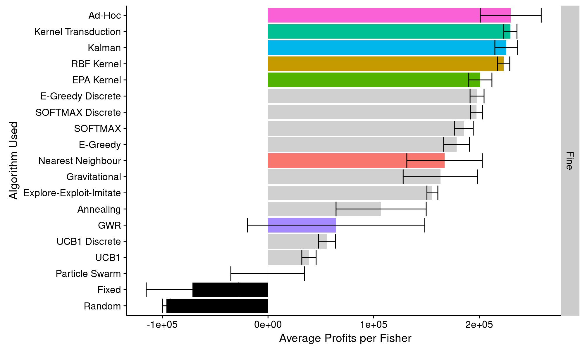

Technical Presentation 1: Model Methodology
Ernesto Carrella
January 18, 2016
This presentation
- Vertical Slice
- Horizontal Slice
Vertical Slice
Objectives
- Policy Simulator
- Agents Flexibility
- Model Flexibility
The State of the Art
- Random Utility Models
- Statistically Efficient
- Easily Generalizable
- Policy-Brittle
- Dynamic Programming
- Strongly Rational
- Computationally Expensive
- Ad hoc
The One Agent Problem

The One Agent Problem
- Find the most profitable spot to fish
- Constraints:
- No biomass information
- No model knowledge
- Environment changes over time
- Subproblems:
- How to explore
- Explore-Exploit Tradeoff
Explore or Exploit ?

Explore or Exploit ?

Explore-Exploit
- Stochastically choose to explore next trip with probability \(p\)
- Explore in the neighborhood of where you currently go
One Agent world

One Agent sample run
Scaling issues

Scaling issues
Scaling issues

L’enfer, c’est les autres
- Other boats consume biomass
- You can use other boats information
- How to imitate?
- With probability \(p\) explore, otherwise copy somebody who’s doing better
Two Agents sample run
Many Agents
Cui prodest?
- Model free
- Adaptive
Oil Prices
Fish the Line (part 1)
Fish the Line (part 2)
Fish the Rocky Line (part 1)
Fish the Rocky Line (part 2)
Target Switching

Gear Selection

Horizontal Slice
Biology
Abstract Model
Each cell a logistic box \[ B_{t+1} = B_t \left( 1 + h \left( 1 - \frac{B_t}{K}\right) \right) \]
Biomass moves
Biomass smoothing
OSMOSE
California
Fisher profits
- Maximize \(\frac{\profits}{\text{Hours out}}\)
- Gas costs main expenditure
- Three questions
- When to go out?
- Where to go?
- When to come back?
Simplifying assumptions
- Fixed probability of going out
- Fixed sale price
- Fixed social networks
Decision-Making
Bandit Problems
Bandit Algorithms
- Multi-armed bandit problem:
- Choose between \(K\) slot machines
- Make most money
- Each spot on the map a slot machine
3 Broad Strategies
- Bandit Algorithms
- Imitation
- Inference
Bandit Algorithms
- Pure trial and error
- Degrade linearly with \(K\)
- Can be discretized
Bandit Algorithms
- \(\epsilon\)-Greedy
- UCB-1 Algorithm
- Boltzmann Exploration
\(\epsilon\)-Greedy
# store the empirical means in an array
means<-numeric(K)
# keep making choices
while(TRUE)
{
# with probability epsilon, make random choice
if random < epsilon
x <- random from 1 to K
else
# otherwise choose option with highest empirical mean
x <- which.max(means)
# choose x and get a random reward
reward<- play(x)
# update means
means[x]<- update means[x] with reward
}\(\epsilon\)-Greedy - example
UCB-1 Algorithm
# store the empirical means
means<-numeric(K)
# store times each option was played
ns<-array[K]
#keep track of how many games played
t<-0
# first play one game for each possible option
for( x in 1:i)
{
reward<-play(x)
ns[x]<-ns[x]+1
means[x]<- update means[x] with reward
t<-t+1
}
# now choose the arm with the maximum upper confidence bound
while(true)
{
x<- which.max(means[x] + sqrt(2*log(t)/ns[x]))
reward<- play(x)
ns[x]<-ns[x]+1
means[x]<- update means[x] with reward
t<-t+1
}UCB-1 Algorithm - example
When to use?
- Anecdotally very high regret with \(K>=50\)
- Map size 50x50
- Weak Exploration:
- Can only explore one slot machine at a time
- All machines are independent of one another
- Improvements:
- Parallelize exploration
- Add structure
Parallel exploration
Parallel exploration
- Exploring one slot machine at a time is very slow
- ABM: multiple agents competing
- Sharing information as parallelization
- Population optimization:
- Effective
- Somewhat unrealistic
- Weak to dynamic problems
Parallel exploration
- Gravitational Search
- Particle Swarm Optimization
- Explore-Exploit-Imitate
- Social Annealing
Gravitational Search
# peek at everyone's profits and normalize them
masses<- (profits-min_profits)/(max_profits-min_profits)
# single out the top Z most profitable competitors
best<-order(masses)[1:Z]
# accelerate as if driven by "gravity" towards the best
acceleration<- acceleration+ sum(g * masses[me]*masses[best]/distance(me,best))
acceleration<- acceleration/masses[me]
# move (with some friction)
velocity<- velocity * runif() + acceleration
position<-position + velocity
play(position)Gravitational Search - Demo
Social Annealing - Demo
Adding Structure

Structure by features
Adding structure
- Exploring one arm at a time is very slow
- Assume some “spatial” correlation
- Describe each observation in terms of features \(f\) \[ d(a,b) = \sum_i \frac{|f_i(a)-f_i(b)|}{h_i} \]
- Recursive supervised learning
- Heatmaps
Algorithms to add structure
- Nearest Neighbour
- Kernel Regression
- Kernel Transduction
- Kalman Filters
- Geographical Regression
- Ad hoc bayes
Nearest Neighbors

Nearest Neighbors - How
- Predict the “closest” known example \[ d(a,b) = \sum_i \frac{|f_i(a)-f_i(b)|}{h_i} \]
- Implement through k-d tree
- Search: \(O(\log N)\)
- Insertion: \(O(\log N)\)
Nearest Neighbors - Demo
Kernel Regression

Kernel Regression - How
- Predict a weighted average of known observations
- Weight proportional to distance \[ y^* = \frac{\sum_i K(x_i,x^*)y_i}{\sum_i K(x_i,x^*)} \]
- Degrades faster:
- Search: \(O(NF)\)
- Insertion: \(O(1)\)
- Rollout memory: \(N=100\)
Kernel Regression - Demo
Ad hoc Bayes

Ad hoc Bayes - How
\[ \text{Pr}(\text{good}|x) = \frac{\text{Pr}(\text{x}|\text{good})\text{Pr}(\text{good}) }{ \text{Pr}(\text{x}|\text{good})\text{Pr}(\text{good}) + \text{Pr}(\text{x}|\text{bad})\text{Pr}(\text{bad}) } \]
- Easy if prior and posterior are normal
- Ad-Hoc but fast
- Search: \(O(1)\)
- Insertion: \(O(K)\)
- To my great chagrin
Easy Bayes - Demo
Comparison

Conclusion
- Adaptive Model
- Set policies and see how agents respond
Social Annealing